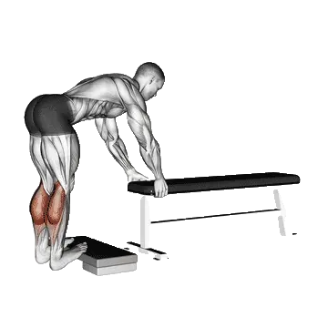

驢式提踵
驢式提踵是腿部中以小腿三頭肌為主的訓練動作。你可以在同一頁查看平均次數與標準次數。
平均次數
腿部腿部訓練下半身小腿三頭肌深蹲

目標肌群
| 分類 | 肌群 |
|---|---|
| 主動肌 | 小腿三頭肌 |
| 輔助肌群 | 無 |
| 穩定肌群 | 無 |
| 握力 | 無 |
驢式提踵平均次數
| 等級 | ||
|---|---|---|
| 初學者 | < 1 | < 1 |
| 初級者 | 20 | 11 |
| 中級者 | 67 | 36 |
| 進階者 | 130 | 69 |
| 菁英 | 203 | 105 |
註：這些數值是單組可完成平均次數的估算。體重、活動範圍、節奏等個人因素都可能造成差異。詳細資料請參考下方表格。
驢式提踵標準次數
男性 體重別(kg)資料 [次數]
| 體重 | 初學者 | 初級者 | 中級者 | 進階者 | 菁英 |
|---|---|---|---|---|---|
| 50 | < 1 | 28 | 91 | 177 | 281 |
| 55 | < 1 | 27 | 86 | 165 | 261 |
| 60 | < 1 | 25 | 80 | 155 | 244 |
| 65 | < 1 | 24 | 76 | 146 | 229 |
| 70 | < 1 | 22 | 72 | 138 | 216 |
| 75 | < 1 | 21 | 68 | 130 | 204 |
| 80 | < 1 | 20 | 65 | 124 | 193 |
| 85 | < 1 | 19 | 61 | 118 | 184 |
| 90 | < 1 | 18 | 59 | 112 | 175 |
| 95 | < 1 | 16 | 56 | 107 | 168 |
| 100 | < 1 | 15 | 53 | 103 | 160 |
| 105 | < 1 | 15 | 51 | 98 | 154 |
| 110 | < 1 | 14 | 49 | 95 | 148 |
| 115 | < 1 | 13 | 47 | 91 | 142 |
| 120 | < 1 | 12 | 45 | 87 | 137 |
| 125 | < 1 | 11 | 43 | 84 | 132 |
| 130 | < 1 | 11 | 41 | 81 | 128 |
| 135 | < 1 | 10 | 40 | 78 | 123 |
| 140 | < 1 | 10 | 38 | 76 | 119 |
男性 年齡別資料 [次數]
| 年齡 | 初學者 | 初級者 | 中級者 | 進階者 | 菁英 |
|---|---|---|---|---|---|
| 15 | < 1 | 13 | 53 | 106 | 169 |
| 20 | < 1 | 19 | 65 | 126 | 197 |
| 25 | < 1 | 20 | 67 | 130 | 203 |
| 30 | < 1 | 20 | 67 | 130 | 203 |
| 35 | < 1 | 20 | 67 | 130 | 203 |
| 40 | < 1 | 20 | 67 | 130 | 203 |
| 45 | < 1 | 18 | 62 | 121 | 191 |
| 50 | < 1 | 15 | 57 | 112 | 178 |
| 55 | < 1 | 12 | 50 | 101 | 162 |
| 60 | < 1 | 9 | 43 | 90 | 146 |
| 65 | < 1 | 6 | 36 | 79 | 129 |
| 70 | < 1 | 2 | 29 | 67 | 112 |
| 75 | < 1 | < 1 | 23 | 57 | 97 |
| 80 | < 1 | < 1 | 18 | 48 | 84 |
| 85 | < 1 | < 1 | 13 | 40 | 72 |
| 90 | < 1 | < 1 | 9 | 33 | 62 |
女性 體重別(kg)資料 [次數]
| 體重 | 初學者 | 初級者 | 中級者 | 進階者 | 菁英 |
|---|---|---|---|---|---|
| 40 | < 1 | 10 | 41 | 82 | 129 |
| 45 | < 1 | 11 | 40 | 78 | 121 |
| 50 | < 1 | 11 | 39 | 75 | 115 |
| 55 | < 1 | 12 | 38 | 71 | 109 |
| 60 | < 1 | 12 | 37 | 68 | 104 |
| 65 | < 1 | 12 | 36 | 66 | 99 |
| 70 | < 1 | 11 | 35 | 63 | 95 |
| 75 | < 1 | 11 | 33 | 60 | 91 |
| 80 | < 1 | 11 | 32 | 58 | 87 |
| 85 | < 1 | 10 | 31 | 56 | 84 |
| 90 | < 1 | 10 | 30 | 54 | 81 |
| 95 | < 1 | 10 | 29 | 52 | 78 |
| 100 | < 1 | 10 | 28 | 50 | 75 |
| 105 | < 1 | 9 | 27 | 48 | 72 |
| 110 | < 1 | 9 | 26 | 47 | 70 |
| 115 | < 1 | 9 | 25 | 45 | 67 |
| 120 | < 1 | 8 | 24 | 44 | 65 |
女性 年齡別資料 [次數]
| 年齡 | 初學者 | 初級者 | 中級者 | 進階者 | 菁英 |
|---|---|---|---|---|---|
| 15 | < 1 | 6 | 27 | 54 | 85 |
| 20 | < 1 | 10 | 35 | 66 | 102 |
| 25 | < 1 | 11 | 36 | 69 | 105 |
| 30 | < 1 | 11 | 36 | 69 | 105 |
| 35 | < 1 | 11 | 36 | 69 | 105 |
| 40 | < 1 | 11 | 36 | 69 | 105 |
| 45 | < 1 | 9 | 33 | 64 | 98 |
| 50 | < 1 | 7 | 29 | 58 | 91 |
| 55 | < 1 | 5 | 25 | 51 | 82 |
| 60 | < 1 | 2 | 20 | 44 | 72 |
| 65 | < 1 | < 1 | 15 | 37 | 62 |
| 70 | < 1 | < 1 | 11 | 30 | 53 |
| 75 | < 1 | < 1 | 7 | 24 | 44 |
| 80 | < 1 | < 1 | 4 | 18 | 36 |
| 85 | < 1 | < 1 | < 1 | 13 | 29 |
| 90 | < 1 | < 1 | < 1 | 10 | 24 |
註：表格中的數值是單組可完成次數的參考。體重別資料可用來估算相對負荷，年齡別資料可用來觀察趨勢差異。
表格說明
| 等級 | 說明 | 分布 |
|---|---|---|
| 初學者 | 掌握正確動作，並持續訓練至少 1 個月。 | 後 5% |
| 初級者 | 持續規律訓練至少 6 個月。 | 前 80% |
| 中級者 | 持續規律訓練至少 2 年。 | 前 50% |
| 進階者 | 持續規律訓練超過 5 年。 | 前 20% |
| 菁英 | 針對該動作專項訓練超過 5 年。 | 前 5% |
其他訓練動作
全身

硬舉
全身 / BIG3

臥推
全身 / BIG3

深蹲
全身 / BIG3

六角槓硬舉
全身

高翻翻站
全身

羅馬尼亞硬舉
全身

相撲硬舉
全身

翻挺
全身

抓舉
全身

翻站
全身

翻站推舉
全身

架上硬舉
全身

啞鈴羅馬尼亞硬舉
全身 / 啞鈴

懸垂翻站
全身

直腿硬舉
全身

雙力臂
全身 / 自體重

高翻抓舉
全身

深蹲推舉
全身

借力挺舉
全身

啞鈴硬舉
全身 / 啞鈴

墊高硬舉
全身

單腳羅馬尼亞硬舉
全身

波比跳
全身 / 自體重

懸垂高翻
全身

分腿挺舉
全身

啞鈴抓舉
全身 / 啞鈴

翻站高拉
全身

抓舉硬舉
全身

翻站拉
全身

暫停硬舉
全身

單腳硬舉
全身

肌力抓舉
全身

傑佛森硬舉
全身

抓舉拉
全身

藥球深蹲拋球
全身

澤奇硬舉
全身

單腳啞鈴硬舉
全身 / 啞鈴

啞鈴翻站推舉
全身 / 啞鈴

吊環雙力臂
全身 / 自體重

啞鈴深蹲推舉
全身 / 啞鈴

懸垂抓舉
全身

啞鈴高拉拉
全身 / 啞鈴

啞鈴懸垂翻站
全身 / 啞鈴

背後硬舉
全身

Clap拉Up
全身

深蹲推蹬
全身
胸部
臥推
胸部 / BIG3

啞鈴臥推
胸部 / 啞鈴

伏地挺身
胸部 / 自體重

上斜臥推
胸部

上斜啞鈴臥推
胸部 / 啞鈴

窄握臥推
胸部

機械夾胸
胸部 / 機械

啞鈴飛鳥
胸部 / 啞鈴

下斜啞鈴飛鳥
胸部 / 啞鈴

下斜臥推
胸部

史密斯機臥推
胸部 / 機械

纜繩飛鳥
胸部 / 纜繩

胸推
胸部

地板推舉
胸部

上斜啞鈴飛鳥
胸部 / 啞鈴

啞鈴地板推舉
胸部 / 啞鈴

下斜啞鈴臥推
胸部 / 啞鈴

暫停臥推
胸部

單臂伏地挺身
胸部 / 自體重

反握臥推
胸部

鑽石伏地挺身
胸部 / 自體重

窄握啞鈴臥推
胸部 / 啞鈴

臥推停槓推舉
胸部

寬握臥推
胸部

下斜伏地挺身
胸部 / 自體重

窄握上斜臥推
胸部

上斜伏地挺身
胸部 / 自體重

窄握伏地挺身
胸部 / 自體重

弓箭手伏地挺身
胸部 / 自體重

Spoto推舉
胸部
背部
硬舉
背部 / BIG3

引體向上
背部 / 自體重

俯身划船
背部

滑輪下拉
背部

反握引體向上
背部 / 自體重

啞鈴划船
背部 / 啞鈴

坐姿纜繩划船
背部 / 纜繩

槓鈴聳肩
背部 / 槓鈴

T槓划船
背部

啞鈴聳肩
背部 / 啞鈴

Pendlay划船
背部

機械划船
背部 / 機械

啞鈴過頭拉
背部 / 啞鈴

啞鈴反向飛鳥
背部 / 啞鈴

胸托啞鈴划船
背部 / 啞鈴

窄握滑輪下拉
背部

機械反向飛鳥
背部 / 機械

反握滑輪下拉
背部

中立握引體向上
背部 / 自體重

直臂下拉
背部

纜繩反向飛鳥
背部 / 纜繩

耶茲划船
背部

俯身啞鈴划船
背部 / 啞鈴

背部伸展
背部

臥板划船
背部

機械背部伸展
背部 / 機械

槓鈴過頭拉
背部 / 槓鈴

單臂引體向上
背部 / 自體重

啞鈴臥板划船
背部 / 啞鈴

反向划船
背部

叛逆划船
背部

單臂滑輪下拉
背部

單臂坐姿纜繩划船
背部 / 纜繩

纜繩直立划船
背部 / 纜繩

機械聳肩
背部 / 機械

六角槓聳肩
背部

史密斯機聳肩
背部 / 機械

啞鈴上斜Y字平舉
背部 / 啞鈴

纜繩聳肩
背部 / 纜繩

屈臂槓鈴過頭拉
背部 / 槓鈴

槓鈴高翻聳肩
背部 / 槓鈴

梅多斯划船
背部

背後槓鈴聳肩
背部 / 槓鈴

反向背伸
背部
肩部

肩推
肩部

啞鈴肩推
肩部 / 啞鈴

啞鈴側平舉
肩部 / 啞鈴

軍事推舉
肩部

坐姿肩推
肩部

坐姿啞鈴肩推
肩部 / 啞鈴

機械肩推
肩部 / 機械

借力推舉
肩部

直立划船
肩部

啞鈴前平舉
肩部 / 啞鈴

纜繩側平舉
肩部 / 纜繩

阿諾肩推
肩部

臉拉
肩部

頸屈
肩部

啞鈴直立划船
肩部 / 啞鈴

機械側平舉
肩部 / 機械

頸後推舉
肩部

倒立伏地挺身
肩部 / 自體重

槓鈴前平舉
肩部 / 槓鈴

圓木推舉
肩部

地雷管推舉
肩部

頸伸展
肩部

Z推舉
肩部

維京推舉
肩部

Shoulder停槓推舉
肩部

啞鈴Z推舉
肩部 / 啞鈴

單臂地雷管推舉
肩部

啞鈴外旋
肩部 / 啞鈴

屈體伏地挺身
肩部 / 自體重

啞鈴借力推舉
肩部 / 啞鈴

啞鈴臉拉
肩部 / 啞鈴

纜繩外旋
肩部 / 纜繩
手臂

啞鈴彎舉
手臂 / 啞鈴

槓鈴彎舉
手臂 / 槓鈴

錘式彎舉
手臂

EZ槓彎舉
手臂

牧師椅彎舉
手臂

纜繩二頭彎舉
手臂 / 纜繩

啞鈴集中彎舉
手臂 / 啞鈴

上斜啞鈴彎舉
手臂 / 啞鈴

機械二頭彎舉
手臂 / 機械

嚴格彎舉
手臂

單臂纜繩二頭彎舉
手臂 / 纜繩

單臂啞鈴牧師椅彎舉
手臂 / 啞鈴

上斜錘式彎舉
手臂

蜘蛛彎舉
手臂

佐特曼彎舉
手臂

坐姿啞鈴彎舉
手臂 / 啞鈴

借力彎舉
手臂

纜繩錘式彎舉
手臂 / 纜繩

過頭纜繩彎舉
手臂 / 纜繩

上斜纜繩彎舉
手臂 / 纜繩

仰臥纜繩彎舉
手臂 / 纜繩

雙槓撐體
手臂 / 自體重

三頭肌下壓
手臂

仰臥三頭肌伸展
手臂

繩索三頭Pushdown
手臂

單臂下拉
手臂

啞鈴三頭肌伸展
手臂 / 啞鈴

三頭肌伸展
手臂

仰臥啞鈴三頭肌伸展
手臂 / 啞鈴

坐姿撐體機械
手臂 / 機械

啞鈴三頭肌後踢
手臂 / 啞鈴

纜繩過頭三頭肌伸展
手臂 / 纜繩

機械三頭肌伸展
手臂 / 機械

坐姿啞鈴三頭肌伸展
手臂 / 啞鈴

反握三頭肌下壓
手臂

JM推舉
手臂

Tate推舉
手臂

吊環撐體
手臂 / 自體重

椅上撐體
手臂 / 自體重

腕彎舉
手臂

反向槓鈴彎舉
手臂 / 槓鈴

反向腕彎舉
手臂

啞鈴腕彎舉
手臂 / 啞鈴

啞鈴反向腕彎舉
手臂 / 啞鈴

啞鈴反向彎舉
手臂 / 啞鈴
腿部
深蹲
腿部 / BIG3

雪橇腿推
腿部

前蹲
腿部

臀推
腿部

腿伸展
腿部

水平腿推
腿部

哈克深蹲
腿部

坐姿腿彎舉
腿部

啞鈴保加利亞分腿蹲
腿部 / 啞鈴

高腳杯深蹲
腿部

仰臥腿彎舉
腿部

機械提踵
腿部 / 機械

啞鈴弓箭步
腿部 / 啞鈴

箱式深蹲
腿部

自體重深蹲
腿部

垂直腿推
腿部

保加利亞分腿蹲
腿部

坐姿提踵
腿部

史密斯機深蹲
腿部 / 機械

髖外展
腿部

早安式
腿部

澤奇深蹲
腿部

槓鈴弓箭步
腿部 / 槓鈴

髖內收
腿部

過頭深蹲
腿部

槓鈴提踵
腿部 / 槓鈴

啞鈴深蹲
腿部 / 啞鈴

分腿蹲
腿部

啞鈴提踵
腿部 / 啞鈴

纜繩拉臀
腿部 / 纜繩

站姿腿彎舉
腿部

地雷管深蹲
腿部

槓鈴反向弓箭步
腿部 / 槓鈴

槓鈴臀橋
腿部 / 槓鈴

單腳推舉
腿部

雪橇推舉提踵
腿部

單腳深蹲
腿部

Belt深蹲
腿部

安全槓深蹲
腿部

手槍深蹲
腿部

暫停深蹲
腿部

槓鈴哈克深蹲
腿部 / 槓鈴

相撲深蹲
腿部

纜繩後踢
腿部 / 纜繩

自體重提踵
腿部

弓箭步
腿部

臀橋
腿部

停槓深蹲
腿部

行走弓箭步
腿部

啞鈴前蹲
腿部 / 啞鈴

啞鈴分腿蹲
腿部 / 啞鈴

反向弓箭步
腿部

深蹲跳
腿部

北歐腿後腱彎舉
腿部

西西深蹲
腿部

半程深蹲
腿部

臀腿抬舉
腿部

纜繩腿伸展
腿部 / 纜繩

單腳坐姿提踵
腿部

Side弓箭步
腿部

臀部後踢
腿部

驢式提踵
腿部

啞鈴行走提踵
腿部 / 啞鈴

側抬腿
腿部 / 自體重

傑佛森深蹲
腿部

地板髖外展
腿部

髖伸展
腿部

地板髖伸展
腿部
核心

仰臥起坐
核心 / 自體重

纜繩捲腹
核心 / 纜繩

坐姿機械捲腹
核心 / 機械

捲腹
核心 / 自體重

啞鈴側彎
核心 / 啞鈴

纜繩伐木式轉體
核心 / 纜繩

懸垂抬腿
核心 / 自體重

俄羅斯轉體
核心 / 自體重

仰臥抬腿
核心 / 自體重

下斜仰臥起坐
核心 / 自體重

懸垂提膝
核心 / 自體重

健腹輪
核心

腳尖碰槓
核心 / 自體重

下斜捲腹
核心 / 自體重

開合跳
核心 / 自體重

腳踏車捲腹
核心 / 自體重

反向捲腹
核心 / 自體重

打水Kicks
核心 / 自體重

登山者
核心 / 自體重

高位滑輪捲腹
核心 / 自體重

站姿纜繩捲腹
核心 / 纜繩

超人式
核心 / 自體重

側腹捲腹
核心 / 自體重

羅馬椅側彎
核心

剪刀腳
核心 / 自體重